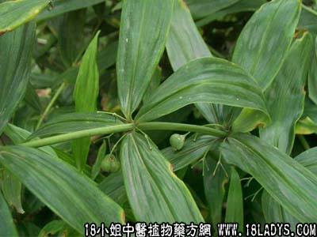

【中药概述】
黄精为百合科草本植物滇黄精、黄精的根茎。甘、平。归脾、肺、肾经。
1．心肺阴虚：用于咳嗽痰少或干咳无痰、气短乏力、口干、少眠、多梦等症，可配麦冬，贝母，沙参，远志，杏仁，茯神，枣仁等。
2．补虚益血：用于病后虚羸，精血不足，腰膝酸软，头晕眼花，须发早白。
3．强脾健胃：用于脾胃虚弱，饮食减少、神疲体倦、舌干苔少等。常配党参，茯苓，甘草，陈皮，麦芽，谷芽等。
【现代报道】
有降低麻醉动物血压的作用，又能抑制肾上腺素引起的血糖过高，对动脉粥样硬化有一定防止作用。
【药效鉴别】
黄精与太子参功能相近，配伍能增强补气益阴生津作用。黄精补阴与熟地相似，但黄精重在补养肺脾之阴，滋阴而不滞。
【临证应用】
黄精，党参各30g，炙甘草10g，水煎服，日1剂。治贫血性、感染性、直立性、原因不明性低血压。
【药理作用】
1.对血糖呈先升后降作用；2.水浸液有降血压作用；3.有防止动脉粥样硬化作用；4.煎剂对痢疾杆菌，伤寒杆菌有抑制作用。
【化学成分】
含蛋白质、粘液质、淀粉、糖类、菸酸、醌类、多种氨基酸及维生素等成分。
【用量用法】
10——15g，水煎服，或入丸散剂。